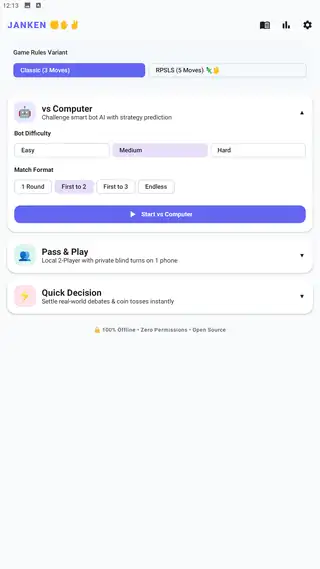

Janken (Rock Paper Scissors)
ألعاب
Janken is a beautifully designed, modern, privacy-first Rock-Paper-Scissors and RPSLS game for Android, built natively with Jetpack Compose. Whether you are settling a debate with a friend or sharpening your mind against adaptive AI, Janken delivers an exquisite, fluid, and delightful experience. ✨
✓ ترخيص مفتوح (GPL-3.0-only) · آخر تحديث: 2026-09-17
1.0.0الإصدار
1.6 MBالحجم
GPL-3.0-onlyالرخصة
Open in Kanzتحميل APK (1.6 MB)
Download APK
SHA-256: 7c18c2b21096a1029caec99f447298c502150255dbf0e7a8c4704e835940874c

امسح الكود لفتح صفحة التطبيق
Scan to open this app page
لو كنز مش متثبت عندك: نزّل متجر كنز.
Not installed? Get the Kanz store.